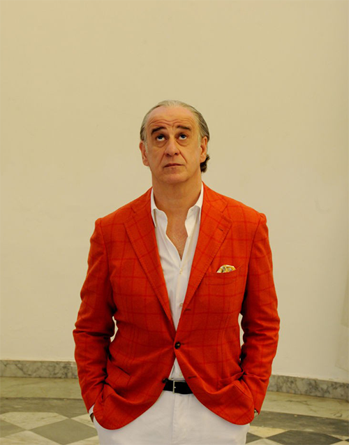

Dolce far niente is a way of life. We, the Italians, live to celebrate with good wine and a plate of pasta, no matter whether it is a normal everyday lunch or the most important holiday in the country. Dolce far niente is a way of thinking always fixed to the moment, in which we can finally ‘do nothing’ and enjoy it. Dolce far niente is this sensation when you sit at a bar in an Italian village while you drink coffee and watch the passersby. Time slows and for half a second you admire life in its simplicity, and you only want to smile.